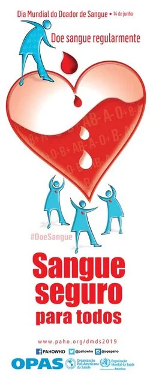

Requisitos básicos para doação de sangue
Na triagem de doadores, a Fundação Pró-Sangue obedece a normas nacionais e internacionais. O alto rigor no cumprimento dessas normas visa oferecer segurança e proteção ao receptor e ao doador. Abaixo estão listados os requisitos básicos e alguns dos principais impedimentos temporários e definitivos para doação de sangue. No entanto, esta lista não esgota os motivos de impedimentos para doação, de forma que outras informações prestadas por você durante a triagem clínica serão consideradas para definir se está apto para doar sangue nesse momento.
Requisitos básicos
- Estar em boas condições de saúde.
- Ter entre 16 e 69 anos, desde que a primeira doação tenha sido feita até 60 anos (menores de 18 anos, clique para ver documentos necessários e formulário de autorização).
- Pesar no mínimo 50kg.
- Estar descansado (ter dormido pelo menos 6 horas nas últimas 24 horas).
- Estar alimentado (evitar alimentação gordurosa nas 4 horas que antecedem a doação).
- Apresentar documento original com foto recente, que permita a identificação do candidato, emitido por órgão oficial (Carteira de Identidade ou cópia autenticada; Cartão de Identidade de Profissional Liberal; Carteira de Trabalho e Previdência Social; Carteira Nacional de Habilitação, digital ou física; RNE - Registro Nacional de Estrangeiro; Título de Eleitor Digital, desde que tenha a foto; e Passaporte brasileiro com filiação).